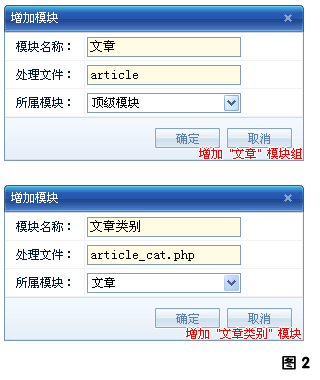

完成了LengdoFrame框架的安装、文章类别数据表的创建后。接下来我们将进入LengdoFrame框架开发的第一步：添加文章类别模块和权限。
这一步很重要也很必要！因为只有完成了这一步，系统才会在模块菜单树中显示出 "文章类别"(参见图1)，我们才能进入到文章类别的模块管理页面！
1. 模块添加
在 "图1" 中可以看出"文章类别"是隶属于"文章"的，所以这里就要增加两个模块。第一个是"文章"模块，更多的时候可以认为是"文章"模块组，因为它还有下级模块。第二个模块就是我们要开发的"文章类别"。
按 "图1" 打开 "内核->模块管理"，然后点击右上边的 "增加" 按钮打开增加模块的窗口，按下图依次填写...

2. 权限添加
模块添加完了，但仅仅这样还是不能显示 "文章类别" 模块的(图1)，必须要为 "文章类别" 模块添加权限后才能显示！"文章" 模块组是不需要添加权限的！
先看下"文章类别"模块需要那些权限呢：
1. 文章类别列表权限 - 可以列出所有文章类别的权限
2. 文章类别增加权限 - 可以增加文章类别
3. 文章类别编辑权限 - 可以编辑文章类别
4. 文章类别删除权限 - 可以删除文章类别
OK，接下来按 "图1" 打开 "内核->权限管理"，然后点击右上边的 "增加" 按钮打开增加权限的窗口，按下图依次填写...
3. 完成！
最后点击 "图1" 中的 "权限系统刷新" 按钮即可显示 "文章类别" 模块了！